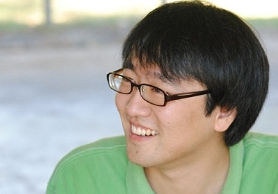

Assistant Research Professor
I am currently an Assistant Research Professor at the Center for Advanced Vehicular Systems (CAVS) at Mississippi State University, where I am part of the CEM group. My current research focuses on artificial intelligence and machine learning for industrial manufacturing, as well as developing molecular dynamics simulation codes and interatomic potentials using High-Performance Computing (HPC). I am actively engaged in surrogate modeling and optimization for various engineering systems.
Previously, I held positions as a Postdoctoral Researcher at Mississippi State University under the supervision of Dr. Mark F. Horstemeyer and Dr. Michael I. Baskes, where I conducted research on polymeric systems and water irrigation modeling. I serve as a reviewer for numerous journals including Molecular Simulation, IEEE Transactions on Image Processing, and IEEE Transactions on Geoscience and Remote Sensing.
I received the B.S. degree in Computer Engineering from Kwangwoon University, Seoul, Korea, under the advisement of Dr. Sungwon Lee, and the Ph.D. degree in Electrical and Computer Engineering from Mississippi State University under the advisement of Dr. James E. Fowler.